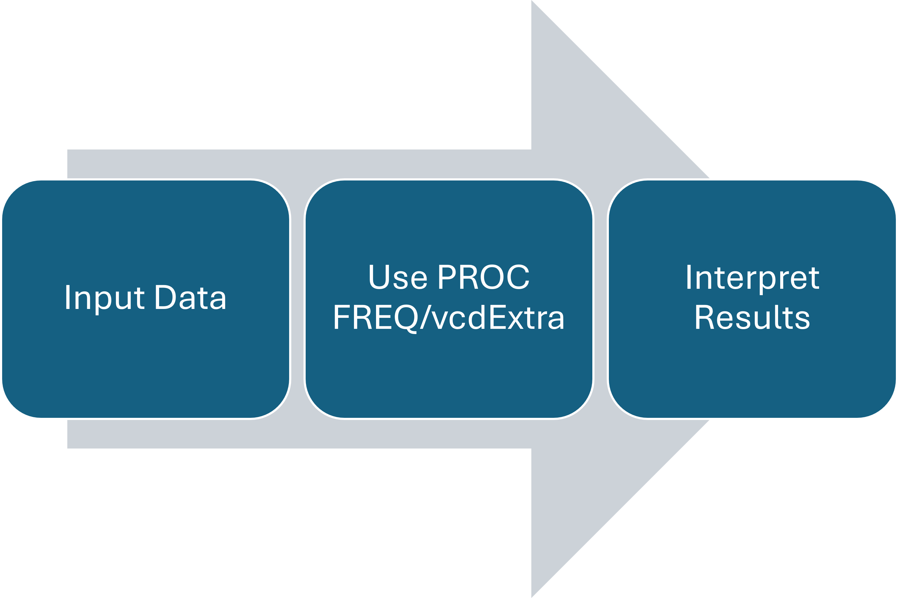

Row Column Count
1 A X 2
2 A Y 4
3 B X 6
4 B Y 8 Column
Row X Y
A 2 4
B 6 8
We wish to determine whether there is an association between the row and column variables using the frequencies observed in each category.
Note
Is the risk variable associated with the prevalence rate?
Recall: Intro to Statistics
The indices of contingency tables denote the row and column of each number. For a total sample size of \(n\),

SAS Example: Contingency Tabledata respire;
length treat $7. outcome $1. ;
input treat $ outcome $ count;
datalines;
placebo f 16
placebo u 48
test f 40
test u 20
;
run;
proc freq data=respire order=data;
weight count;
tables treat*outcome;
run;proc freq calls the FREQ procedure in SAS.
data=respire means SAS will automatically use the most recently run data set.order=data means we are creating the rows and columns based on how the data was inputted, not alphabetical order.weight tells SAS the number of counts for each counttables creates the contingency table with row, column, and total percentages.run; tells SAS to run the code. This is important!SAS- Long FormatWhen the data is not aggregated, the FREQ procedure can still be used to create contingency tables. We can use the import data procedure in SAS ODA to create work.spore from Spore.csv uploaded on Canvas.
proc freq order=data data=severe;
weight count;
tables treat*outcome / chisq nocol;
exact or;
run;RTo create your own contingency table, you can use the data.frame() and xtabs() functions.
Row Column Count
1 A X 2
2 A Y 4
3 B X 6
4 B Y 8 Column
Row X Y
A 2 4
B 6 8You can also use the expand.grid() function to create combinations of variable levels.
Row Column Count
1 A X 2
2 B X 4
3 A Y 6
4 B Y 8 Column
Row X Y
A 2 6
B 4 8Note
ordered can also be used to account for ordering in the row and column variables.
R- Long FormatWhen the data is not aggregated, the xtabs function can still be used to create contingency tables. First, we import Spore.csv from Canvas.
ID Treatment Period Spore
1 1 Test Pre-Treatment Full
2 1 Test Mid-Treatment Some
3 1 Test Post-Treatment Some
4 2 Test Pre-Treatment Full
5 2 Test Mid-Treatment None
6 2 Test Post-Treatment None
7 3 Test Pre-Treatment Full
8 3 Test Mid-Treatment Some
9 3 Test Post-Treatment Some
10 4 Test Pre-Treatment Full
11 4 Test Mid-Treatment Some
12 4 Test Post-Treatment
13 5 Test Pre-Treatment Full
14 5 Test Mid-Treatment None
15 5 Test Post-Treatment None
16 1 Placebo Pre-Treatment Full
17 1 Placebo Mid-Treatment Full
18 1 Placebo Post-Treatment Full
19 2 Placebo Pre-Treatment Full
20 2 Placebo Mid-Treatment Some
21 2 Placebo Post-Treatment Some
22 3 Placebo Pre-Treatment Full
23 3 Placebo Mid-Treatment Some
24 3 Placebo Post-Treatment Some
25 4 Placebo Pre-Treatment Full
26 4 Placebo Mid-Treatment Some
27 4 Placebo Post-Treatment Some
28 5 Placebo Pre-Treatment Some
29 5 Placebo Mid-Treatment
30 5 Placebo Post-Treatment
31 6 Test Pre-Treatment Full
32 6 Test Mid-Treatment Some
33 6 Test Post-Treatment Some
34 7 Test Pre-Treatment Full
35 7 Test Mid-Treatment None
36 7 Test Post-Treatment None
37 8 Test Pre-Treatment Full
38 8 Test Mid-Treatment Some
39 8 Test Post-Treatment Some
40 9 Test Pre-Treatment Full
41 9 Test Mid-Treatment Some
42 9 Test Post-Treatment None
43 10 Test Pre-Treatment Full
44 10 Test Mid-Treatment Some
45 10 Test Post-Treatment Some
46 6 Placebo Pre-Treatment Full
47 6 Placebo Mid-Treatment Full
48 6 Placebo Post-Treatment Full
49 7 Placebo Pre-Treatment Full
50 7 Placebo Mid-Treatment Full
51 7 Placebo Post-Treatment Full
52 8 Placebo Pre-Treatment Full
53 8 Placebo Mid-Treatment Full
54 8 Placebo Post-Treatment Full
55 9 Placebo Pre-Treatment Full
56 9 Placebo Mid-Treatment Some
57 9 Placebo Post-Treatment Some
58 10 Placebo Pre-Treatment Full
59 10 Placebo Mid-Treatment Some
60 10 Placebo Post-Treatment Some
61 11 Test Pre-Treatment Full
62 11 Test Mid-Treatment Some
63 11 Test Post-Treatment None
64 12 Test Pre-Treatment Full
65 12 Test Mid-Treatment Some
66 12 Test Post-Treatment None
67 13 Test Pre-Treatment Full
68 13 Test Mid-Treatment Some
69 13 Test Post-Treatment Some
70 14 Test Pre-Treatment Full
71 14 Test Mid-Treatment None
72 14 Test Post-Treatment None
73 15 Test Pre-Treatment Full
74 15 Test Mid-Treatment None
75 15 Test Post-Treatment None
76 11 Placebo Pre-Treatment Full
77 11 Placebo Mid-Treatment Some
78 11 Placebo Post-Treatment Some
79 12 Placebo Pre-Treatment Full
80 12 Placebo Mid-Treatment Some
81 12 Placebo Post-Treatment Some
82 13 Placebo Pre-Treatment Full
83 13 Placebo Mid-Treatment Some
84 13 Placebo Post-Treatment Some
85 14 Placebo Pre-Treatment Full
86 14 Placebo Mid-Treatment Full
87 14 Placebo Post-Treatment Full
88 15 Placebo Pre-Treatment Full
89 15 Placebo Mid-Treatment Full
90 15 Placebo Post-Treatment Full Spore
Treatment Full None Some
Placebo 2 26 0 17
Test 1 15 13 16Suppose a survey asking sophomores and senior students whether they agree with the statement “I enjoyed my in-person classes this semester.” yielded the following results.
Enter the data in SAS using the data step and generate the contingency tables. Name the data set enjoy.
| Strongly Agree | Agree | Neutral | Disagree | Strongly Disagree | |
|---|---|---|---|---|---|
| Sophomore | 24 | 43 | 12 | 25 | 12 |
| Seniors | 19 | 37 | 24 | 32 | 21 |
OR
response
year SA A N D SD
Sophomore 24 43 12 25 12
Seniors 19 37 24 32 21There are many ways to code the data step. Here’s one way to do it!
data enjoy;
length year $9. response $2.;
input year $ response $ count @@;
datalines;
sophomore SA 24 sophomore A 43
sophomore N 12
sophomore D 25 sophomore SD 12
senior SA 19 senior A 37
senior N 24
senior D 32 senior SD 21
;
proc freq order=data data=enjoy;
weight count;
tables year*response;
run;If the two categorical variables are independent of each other, they are not associated.
Note
Independence also means that the joint probability \(p_{ij}\) can be determined solely on the basis of the marginal probabilities. These can be estimated using sample data.
The null hypothesis of no association (independence or homogeneity) between row and column variables imply that the totals are fixed. The probabilities of realization of each cell is determined by the hypergeometric distribution.

The Pearson Chi-square statistic can be written in terms of the joint frequency n_ij and the expected frequency m_ij.
\[Q_P = \sum_{i=1}^2\sum_{j=1}^2 \frac{(n_{ij}-m_{ij})^2}{m_{ij}}\]
Note
\(m_{ij}\) is the expected value of the number of observations in row \(i\) and column \(j\), \(n_{ij}\). The expected frequency \(m_{ij}\) can be calculated based on the null hypothesis assumption.
Another form of the Chi-square statistic is the Mantel-Haenszel chi-square statistic, \(Q\). For \(2\times 2\) contingency tables,
\[Q = \frac{(n_{11}-m_{11})^2}{v_{11}}\]
\[m_{11} = n_{1+}n_{+1}/n; v_{11} = \frac{n_{1+}n_{2+}n_{+1}n_{+2}}{n^2(n-1)}\]
Note
\(Q\), also known as the randomization chi-square, is based on the condition that all marginal totals are fixed and the probability distribution of random allocation of units to groups is given by the hypergeometric distribution. \(m_{11}\) and \(v_{11}\) are the mean and variance of the hypergeometric distribution based on the \(2 \times 2\) table, respectively.
The relationship can also be approximated by the following relation:
\[Q_P = \frac{n}{n-1}Q\]
For large \(n\), both the MH chi-square and the Pearson chi-square approach a chi-square distribution with \(1\) degree of freedom (\(\chi^2_1\)).
Warning
Rule of thumb for \(Q_P\): The expected value for each cell should be at least 5, i.e. \(m_{ij} \geq 5\) for all \(i,j\)
Tip
Because the MH chi-square statistic comes from a hypergeometric distribution, the MH chi-square statistic can be used for small samples using exact calculations of p-values from the hypergeometric distribution. This is not possible with the Pearson chi-square.
The MH chi-square statistic can also be extended for use in the presence of covariates/stratifying variables.
The null hypothesis of no association states that there is no association between row and column variables. - Assuming this is true and assumptions are satisfied, \(Q\) and \(Q_P\) follow a \(\chi^2_1\) distribution for \(2\times2\) tables.
Note
The p-values are given by \(P(\chi^2 > Q_P)\) and \(P(\chi^2 > Q)\) for Pearson and MH Chi-squares, respectively.

SAS: FREQ procedureweight statement tells SAS if there is an aggregated count variable present in the data set.tables statement tells SAS to create a contingency table using the stated variables.
cmh or the chisq option to calculate the randomization and Pearson chi-square values.Shown below is a sample SAS code.
proc freq;
weight count;
tables a*b/ cmh chisq;
run;R: vcdExtraIn R, the vcdExtra package is required to perform the Mantel-Haenszel chi-square tests. The function CMHtest() provides the value of the Mantel-Haenszel statistic, while chisq.test() provides the Pearson chi-square statistic.
The table shows the information from a randomized clinical trial that compared an experimental treatment to a placebo treatment for a respiratory disorder.
Outcome
Treatment Favorable Unfavorable
Placebo 16 48
Test 40 20Pearson Chi-square (without continuity adjustment)
Outcome
Treatment Favorable Unfavorable
Placebo 16 48
Test 40 20
Pearson's Chi-squared test
data: dat_cc
X-squared = 21.709, df = 1, p-value = 3.174e-06Randomization Chi-square
Cochran-Mantel-Haenszel Statistics for Treatment by Outcome
AltHypothesis Chisq Df Prob
cor Nonzero correlation 21.534 1 3.4768e-06
rmeans Row mean scores differ 21.534 1 3.4768e-06
cmeans Col mean scores differ 21.534 1 3.4768e-06
general General association 21.534 1 3.4768e-06What is the Pearson chi-square value? 21.7
What is the Mantel-Haenszel chi-square value? 21.53
Is there strong evidence of an association between treatment and outcome?
Suppose we wish to determine if the frequency of falls is related to wheelchair use for Polio survivors. The data is shown in the table.
Wheelchair
Fall Yes No
Fallers 62 121
Nonfallers 18 32Pearson Chi-square (without continuity adjustment)
Pearson's Chi-squared test
data: dat_cc
X-squared = 0.078299, df = 1, p-value = 0.7796Randomization Chi-square
The chi-square distribution assumption for \(Q\) and \(Q_P\) includes a large sample assumption.
Warning
What if \(m_{ij} < 5\)?
The Fisher’s Exact Test can be used to analyze these contingency tables.
Fisher’s Exact Test is based on the hypergeometric distribution. The test calculates an exact p-value, unlike the chi-square test which only uses an approximation.
Note
The test is easy to calculate for \(2 \times 2\) and total sample sizes below 50, but computationally expensive as the number increases.
The p-value can be calculated using the hypergeometric distribution with the following parameters: \(Hyper(N=n,m=n_{+1},k=n_{1+})\)
Null hypothesis \(H_0\): there is no association between the row and column variables
One sided \(H_a\): There is a positive/negative association between the row and column variables. OR One combination of the row and column variable levels is more favored compared to the others.
Two-sided \(H_a\): there is an association between the row and column variables.
Note
To solve the exact p-value using the hypergeometric distribution, only add probabilities of outcomes that have lower probabilities than the observed value in the direction of the alternative hypotheses.
Including the exact or the chisq option under the tables statement will yield the results of the exact test.
proc freq;
weight count;
tables a*b/ exact chisq;
run;The fisher.test() can perform Fisher’s exact test in R using a contingency table as input.
The table shown shows data from a study on treatments for healing severe infections. Calculate the exact p-value of this contingency table using the Fisher’s Exact Test.
Outcome
Treatment Favorable Unfavorable
Test 5 1
Control 1 3 Outcome
Treatment Favorable Unfavorable
Test 5 1
Control 1 3
Fisher's Exact Test for Count Data
data: dat_cc
p-value = 0.119
alternative hypothesis: true odds ratio is greater than 1
95 percent confidence interval:
0.5819 Inf
sample estimates:
odds ratio
10.29391
Fisher's Exact Test for Count Data
data: dat_cc
p-value = 0.1905
alternative hypothesis: true odds ratio is not equal to 1
95 percent confidence interval:
0.40161 930.24692
sample estimates:
odds ratio
10.29391 For X > 5, the only possible value of X is 6.
The p-value is then the sum of these two probabilities:
[1] 0.4285714[1] 0.3809524[1] 0.07142857[1] 0[1] 0\(P(X=0)\), \(P(X=1)\), and \(P(X=2)\) have lower probabilities compared to \(P(X=5)\). Hence, we add these probabilities to the one-sided p-value to get the two-sided p-value.
Note
In SAS, be careful when selecting which one-sided alternative hypothesis to interpret from the results!
Fisher’s experiment: A number of individuals gathered together for afternoon tea. A lady in the group said that she could differentiate between whether the milk or the tea was poured first into a cup. Fisher suggested to pour tea first into four cups and to pour milk first into four cups. The lady was blinded to which cups had milk or tea poured first, but she knew there were four of each. The contingency table is shown below. At \(\alpha=0.05\), do we have sufficient evidence to conclude that the lady can differentiate tea based on how they were poured?
Guess
Actual Milk Tea
Milk 3 1
Tea 1 3Direction is specified, hence we need to use the “>” one-sided p-value.
Direction is specified, hence we need to use the “>” one-sided p-value.
Guess
Actual Milk Tea
Milk 3 1
Tea 1 3Direction is specified, hence we need to use the “>” one-sided p-value.
The only other possible value of \(X\) is \(X=4\).
To get the one-sided p-value, we need to add these two probabilities:
Note
Note that we needed to add \(P(X=4)\) because its value is less than that of \(P(X=3)\).
The resulting p-value is 0.2429. At significance level \(\alpha=0.05\), we fail to reject the null hypothesis. We have no sufficient evidence to conclude that the lady can differentiate tea based on how they were poured.
We are often interested in comparing two independent populations. For binary responses, we can compare proportions of success.
Note
Recall from Intro to Stats course: we can estimate the confidence intervals and standardized statistics for the difference of two proportions.
Estimating the difference of the two proportions involves calculating the confidence intervals. There are different methods to calculate the confidence interval for the difference in proportion.
Note
Independence of the two populations (Groups 1 and 2) mean that we have two independent binomial distributions.
The commonly used confidence interval in estimating difference in proportions is the Wald confidence interval.
\[p_1-p_2 \pm z_{1-\alpha/2}\sqrt{\frac{p_1(1-p_1)}{n_{1+}} + \frac{p_2(1-p_2)}{n_{2+}}}\]
Warning
This CI fails when \(p_1\) or \(p_2\) are close to the extreme values (0 and 1). this CI does not account for the discreteness of the data.
We introduce a correction term to the Wald confidence interval to account for the continuity of the data.
\[p_1-p_2 \pm z_{1-\alpha/2}\sqrt{\frac{p_1(1-p_1)}{n_{1+}} + \frac{p_2(1-p_2)}{n_{2+}}} +1/2 (1/n_{1+} +1/n_{2+} )\]
Warning
This CI still fails when \(p_1\) or \(p_2\) are close to the extreme values (0 and 1).
We introduce a correction term to the Wald confidence interval to account for the extreme values.
\[p_1-p_2 \pm z_{1-\alpha/2}\sqrt{\frac{\tilde{p}_1(1-\tilde{p}_1)}{n_{1+}+2} + \frac{\tilde{p}_2(1-\tilde{p}_2)}{n_{2+}+2}} \] where
\[\tilde{p}_1 = (n_{11}+1)/(n_{1+}+2) ; \tilde{p}_2 = (n_{21}+1)/(n_{2+}+2)\]
Note
This correction keeps the coverage of the confidence interval at 95% for all possible values of \(p_1\) and \(p_2\).
| Confidence Intervals | SAS code | R code | Adjustment Type |
|---|---|---|---|
| Wald | wald |
“wald” | Default |
| Corrected Wald | correct |
“waldcc” | Continuity correction |
| Agresti-Caffo | ac |
“ac” | Improved Coverage |
| Miettinen-Nurminen | mn |
“mn” | Uses goodness-of-fit to improve coverage |
| Newcombe | newcombe |
“scorecc” | hybrid interval that does well for small counts |
| Hauck-Anderson | ha |
“ha” | Accounts for row totals |
SAStables statement are included in the previous slide.riskdiff option of the tables statement allows us to specify which confidence intervals we need for the difference as well as the estimates for the group proportions.alpha option can be used to change the confidence level.Sample SAS code:
RThe BinomDiffCI() function in the DescTools package in R can calculate these confidence intervals.
The contingency table shows the information from a randomized clinical trial that compared an experimental treatment to a placebo treatment for a respiratory disorder.
Outcome
Treatment Favorable Unfavorable
Placebo 16 48
Test 40 20Calculate the 95% confidence interval for the difference in proportion of favorable outcomes for both treatment groups.
Outcome
Treatment Favorable Unfavorable
Placebo 16 48
Test 40 20 est lwr.ci upr.ci
wald 0.4166667 0.2570362 0.5762972
waldcc 0.4166667 0.2408903 0.5924430
ac 0.4166667 0.2455745 0.5618546
mn 0.4166667 0.2460145 0.5626554The estimated difference in proportion is 0.4167 with the following 95% confidence intervals: - Wald: 0.2570-0.5763 - Corrected Wald: 0.2409-0.5924 - Agresti-Caffo: 0.2456-0.5416 - Miettinen-Nurminen 0.2460-0.5627
One of the most famous and largest clinical trials ever performed was in 1954. The data obtained from this RCT is shown in the contingency table.
Calculate the 90% confidence interval for the difference in proportion of polio-free children between the vaccine and placebo group.
The estimated difference in proportion is 0.0004.
Odds of success
The ratio of probability of success and failure of an outcome is referred to as the odds.
\[ Odds = p/(1-p) \]
Odds Ratio
The ratio of the odds of success for Group 1 and Group 2 is referred to as the odds ratio. \[ OR = \frac{p_1/(1-p_1)}{p_2/(1-p_2)} = (n_{11}n_{22}/n_{21}n_{12}) \]
The odds ratio is commonly used as an effect size for retrospective studies. This statistic is also used in logistic regression techniques, which will be discussed later.
The ratio of the risk developing a particular condition for individuals with risk factors present and absent is called the relative risk.
\[ RR = p_1/p_2 = \frac{(n_{11}/n_{1+})}{(n_{21}/n_{2+})} \]
The relative risk is commonly used as an effect size in prospective studies.
Note
For cross-sectional data, the relative risk is known as the prevalence ratio because the disease and risk factor are assessed at the same time.
Note
When the condition is rare, the OR is approximately equal to the RR.
SASRThe odds ratio and relative risk can be calculated using functions from the epitools package.
Tip
The fisher method provides exact confidence intervals for relative risk and odds ratio. The fisher.test() function provides an exact confidence interval for the odds ratio based on the hypergeometric distribution, but it does not include the relative risk.
The contingency table shows data from a study on treatments for severe infections. Calculate the asymptotic and exact confidence limits for the odds ratio of favorable outcomes for test and control groups.
Outcome
Treatment Favorable Unfavorable
Test 10 2
Control 2 4The data set severe_long.csv includes data from a study on treatments for severe infections.
Treatment Outcome
1 Test Favorable
2 Test Favorable
3 Test Favorable
4 Test Favorable
5 Test Favorable
6 Test FavorableCalculate the asymptotic and exact confidence limits for the odds ratio of favorable outcomes for test and control groups.
| Method | Value and CI |
|---|---|
| Asymptotic | 10 (1.0256, 97.5005) |
| Exact | 10 (0.6896,166.3562) |
The two methods lead to different conclusions.
Outcome
Treatment Favorable Unfavorable
Control 2 4
Test 10 2$data
Outcome
Treatment Favorable Unfavorable Total
Test 10 2 12
Control 2 4 6
Total 12 6 18
$measure
odds ratio with 95% C.I.
Treatment estimate lower upper
Test 1 NA NA
Control 10 1.025636 97.50049
$p.value
two-sided
Treatment midp.exact fisher.exact chi.square
Test NA NA NA
Control 0.06119371 0.1070351 0.03389485
$correction
[1] FALSE
attr(,"method")
[1] "Unconditional MLE & normal approximation (Wald) CI"$data
Outcome
Treatment Favorable Unfavorable Total
Test 10 2 12
Control 2 4 6
Total 12 6 18
$measure
odds ratio with 95% C.I.
Treatment estimate lower upper
Test 1.000000 NA NA
Control 8.457238 0.6896384 166.4345
$p.value
two-sided
Treatment midp.exact fisher.exact chi.square
Test NA NA NA
Control 0.06119371 0.1070351 0.03389485
$correction
[1] FALSE
attr(,"method")
[1] "Conditional MLE & exact CI from 'fisher.test'"Note
We report the estimate of the odds ratio from the "wald" method, but use the "fisher" confidence interval as the exact confidence interval.
Two groups having the same symptoms of respiratory illness were sampled. One group was treated with an experimental treatment and the other group was treated with a placebo. The participants were asked whether there was an overall treatment in overall respiration.
Outcome
Treatment Yes No
Test 29 16
Placebo 14 31Two groups having the same symptoms of respiratory illness were sampled. One group was treated with an experimental treatment and the other group was treated with a placebo. The participants were asked whether there was an overall treatment in overall respiration.
Outcome
Treatment Yes No
Test 29 16
Placebo 14 31Odds ratio
odds ratio with 95% C.I.
Treatment estimate lower upper
Placebo 1.000000 NA NA
Test 4.013393 1.668039 9.656441Relative Risk
True proportion of positive results that a test elicits when performed on subjects known to have the disease.
\[Sens=TP/(TP+FN) = n_{11}/n_{1+}\] Sensitivity is the conditional probability of a positive test given that the subject has the disease (\(P(PT|HD)\))
True proportion of negative results that a test elicits when performed on subjects known to be disease free.
\[Sens=TN/(TN+FP) = n_{22}/n_{2+}\] Specificity is the conditional probability of a negative test when the subject does not have the disease (\(P(NT|ND)\)).
The FREQ procedure can also calculate sensitivity and specificity.
riskdiff approximates these metrics using the risk estimates.
The following table shows the results of a study investigating a new screening device for a skin disease. Calculate the sensitivity and specificity of the screening device.
Test
Status Positive Negative
Disease Present 52 8
Disease Absent 20 100The following table shows the results of a study investigating a new screening device for a skin disease. Calculate the sensitivity and specificity of the screening device.
Test
Status Positive Negative
Disease Present 52 8
Disease Absent 20 100SAS Code
A pharmaceutical company developed a screening test that can be used to detect infection of the Lassa (virus). The newly developed test was said to be cheaper than the tests currently available to the public, but its performance was yet to be evaluated. The screening test was applied to 115 diagnosed cases (w/ Lassa virus) and 120 control participants (w/o Lassa virus) of the Lassa fever. The resulting contingency table is shown in the table.
Test
Status Positive Negative
Disease Present 97 18
Disease Absent 45 75A pharmaceutical company developed a screening test that can be used to detect infection of the Lassa (virus). The newly developed test was said to be cheaper than the tests currently available to the public, but its performance was yet to be evaluated. The screening test was applied to 115 diagnosed cases (w/ Lassa virus) and 120 control participants (w/o Lassa virus) of the Lassa fever. The resulting contingency table is shown in the table.
Test
Status Positive Negative
Disease Present 97 18
Disease Absent 45 75When the 2x2 table provides information from matched pairs, the two responses are related to each other. Hence, independence cannot be assumed.
Null hypothesis: The marginal probabilities of each outcome are the same.
The test statistic for the McNemar’s test is \(Q_M\) given by
\[Q_M = (n_{12}-n_{21})^2/(n_{12}+n_{21})\]
agree option in the tables statement can be used to perform the McNemar’s test.exact statement.The table displays data collected by political science researchers who polled husbands and wives on whether they approved of one of their U.S. senators. The cell counts represent the number of pairs of husbands and wives who fit the configurations indicated by the row and column levels. Use the McNemar’s test to determine whether there is no difference in husband and wife approvals on the state senator.
Wife
Husband Yes No
Yes 20 5
No 10 10The table displays data collected by political science researchers who polled husbands and wives on whether they approved of one of their U.S. senators. The cell counts represent the number of pairs of husbands and wives who fit the configurations indicated by the row and column levels. Use the McNemar’s test to determine whether there is no difference in husband and wife approvals on the state senator.
Wife
Husband Yes No
Yes 20 5
No 10 10The tables show the data from a study that compared the diagnostic accuracy of magnetic resonance imaging (MRI) and ultrasound in patients who had been established as having localized prostate cancer by a gold standard test.
Ultrasound
MRI Localized Advanced
Localized 4 6
Advanced 3 3The tables show the data from a study that compared the diagnostic accuracy of magnetic resonance imaging (MRI) and ultrasound in patients who had been established as having localized prostate cancer by a gold standard test.
Ultrasound
MRI Localized Advanced
Localized 4 6
Advanced 3 3Recall that the Poisson distribution is described by the following density function:
\[P(x)= e^{-\lambda}\lambda^x/x!\]
where \(\lambda\) is the expected number of events at a given unit of time.

The IDR can be estimated using conditional binomial distributions assuming \(n_v\) and \(n_p\) are independent Poisson processes.
\[P(n_v|n_v+n_p) \sim Bin\left(N=n_v + n_p, p = \frac{\lambda_vN_v}{\lambda_vN_v+\lambda_pN_p}\right)\]
The binomial proportion can be estimated using the proportion of events in the treatment group:
\[p = \frac{n_v}{n_v+n_p} = \frac{IDR(N_v/N_p)}{1+(IDR)(N_v/N_p)}\] Using algebra (Problem Set 1), it is easy to show that:
\[IDR = \frac{p}{1-p}\left(N_p/N_v\right)\]
You can calculate the confidence interval estimates for \(p\) using the binomial distribution assumption (\(p_L,p_U\)) and apply the scaling factor to each confidence limit.
\[95\% CI: \left(\frac{p_L}{1-p_L}(N_p/N_v),\frac{p_U}{1-p_U}(N_p/N_v)\right)\]
binomial option in the tables statement produces the estimate and exact confidence limits for the binomial proportion \(p\), i.e. \(p_L\) and \(p_U\).IML procedure, which is the procedure used to perform mathematical equations, is used to calculate the IDR confidence limits.
GENMOD procedure to calculate exact confidence intervals for the IDR.The table shows the results of an international study of the effect of a rotavirus vaccine in nearly 70,000 infants on health care events. The events counted were hospitalizations or emergency room visits.
The table shows the results of an international study of the effect of a rotavirus vaccine in nearly 70,000 infants on health care events. The events counted were hospitalizations or emergency room visits.

data vaccine2;
input Outcome $ Count @@;
datalines;
vaccine 3 placebo 58
;
ods select BinomialCLs; *this statement filters the output.;
1proc freq order=data data=vaccine2;
weight count;
tables Outcome / binomial (exact); *calculates the exact confidence limits for the binomial proportion;
ods output BinomialCLs=BinomialCLs; *outputs a dataset that includes the binomial CLs.;
run;
proc iml ;
Use BinomialCLs var{LowerCL UpperCL};
read all into CL;
print CL;
q = { 3, 7500, 58 , 7250 }; *vector of numbers from the table;
C= q[2]/q[4]; *q[i] represents the ith number in the q vector defined above. C is the person-years ratio Nv/Np;
P= q[1]/ (q[1] + q[3]); *estimate of the binomial distribution;
R= P/ ((1-P) *C) ; * IDR estimate;
CI= CL[1]/((1-CL[1])*C) || CL[2]/((1-CL[2])*C) ; *IDR CL;
print r CI;
quit;order=data is important so as to keep the proportions consistent.
events <- c(3,58)
person_years <- c(7500, 7250)
mult <- person_years[2]/person_years[1] #multiplier
DescTools::BinomCI(events[1],sum(events),method = "clopper-pearson") -> p_est
data.frame(IDR = p_est[1]/(1-p_est[1])*mult,
IDR_lower = p_est[2]/(1-p_est[2])*mult,
IDR_higher = p_est[3]/(1-p_est[3])*mult) |> gt::gt()| IDR | IDR_lower | IDR_higher |
|---|---|---|
| 0.05 | 0.01002014 | 0.1535468 |
The table lists the number of accidents for day and night shift workers at a certain factory in Southeast Asia. The company wants you to investigate if there is any evidence of night shift workers having a higher accident density, i.e., higher incidence density of accidents, compared to the day shift.
Metric
Shift Accidents Person-Hours
Night 25 1150
Day 20 1240The table lists the number of accidents for day and night shift workers at a certain factory in Southeast Asia. The company wants you to investigate if there is any evidence of night shift workers having a higher accident density, i.e., higher incidence density of accidents, compared to the day shift.
Metric
Shift Accidents Person-Hours
Night 25 1150
Day 20 1240data accident;
/*data only has the events. Person-Hours are used later.*/
input Outcome $ Count @@;
datalines;
1night 25 day 20
;
ods select BinomialCLs; *this statement filters the output.;
proc freq order=data data=accident;
weight count;
tables Outcome / binomial (exact) alpha=0.05; *calculates the exact confidence limits for the binomial proportion;
ods output BinomialCLs=BinomialCLs; *outputs a dataset that includes the binomial CLs.;
run;
proc iml ;
Use BinomialCLs var{LowerCL UpperCL};
read all into CL;
print CL;
q = { 25 1150 20 1240 }; *vector of numbers from the table;
C= q[2]/q[4]; *q[i] represents the ith number in the q vector defined above. C is the person-years ratio Nv/Np;
P= q[1]/ (q[1] + q[3]); *estimate of the binomial distribution;
R= P/ ((1-P) *C) ; * IDR estimate;
CI= CL[1]/((1-CL[1])*C) || CL[2]/((1-CL[2])*C) ; *IDR CL;
print r CI;
quit;events <- c(25,20)
person_years <- c(1150,1240)
mult <- person_years[2]/person_years[1] #multiplier
DescTools::BinomCI(events[1],sum(events),method = "clopper-pearson") -> p_est
data.frame(IDR = p_est[1]/(1-p_est[1])*mult,
IDR_lower = p_est[2]/(1-p_est[2])*mult,
IDR_higher = p_est[3]/(1-p_est[3])*mult) |> gt::gt()| IDR | IDR_lower | IDR_higher |
|---|---|---|
| 1.347826 | 0.7187612 | 2.559057 |
POWER procedure enables us to calculate how many samples are needed to detect a set effect size in examining the difference between two proportions from two different populations.Suppose prior literature states that the incidence rate of a chronic disease is 0.40. Suppose we want to perform a prospective study to test the association between the disease incidence and family history, i.e. whether other family members were diagnosed with the chronic disease. We want to detect a proportion difference of 0.10 between groups with power of 80% (0.80) at a significance level of 0.05.
Suppose prior literature states that the incidence rate of a chronic disease is 0.40. Suppose we want to perform a prospective study to test the association between the disease incidence and family history, i.e. whether other family members were diagnosed with the chronic disease. We want to detect a proportion difference of 0.10 between groups with power of 80% (0.80) at a significance level of 0.05.
Chapter 2- Back to home